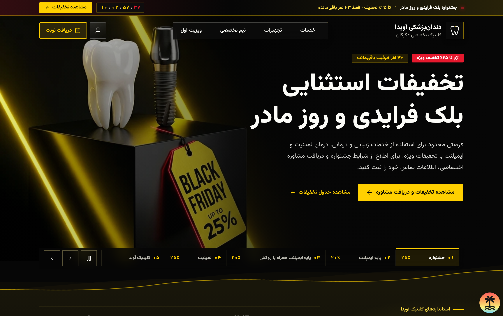
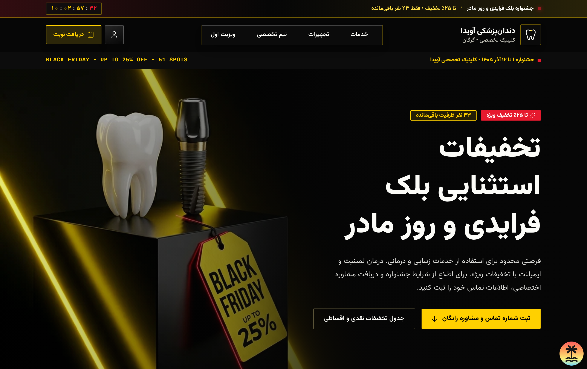
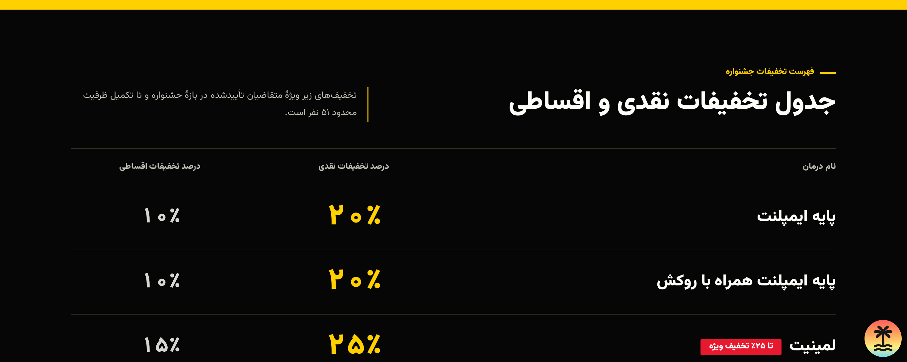
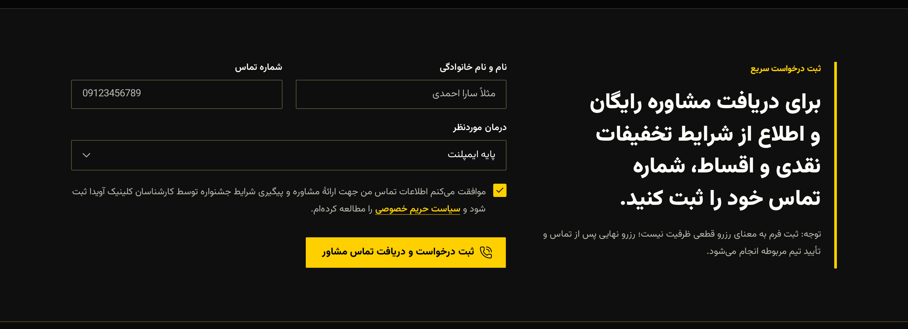

فصل۲
نمای عمومی سایت و مسیر مخاطب در جشنواره
صفحهٔ اصلی و کاروسل جشنواره
هنگامی که جشنواره فعال است و کلید تم بلک فرایدی روشن باشد، بالای صفحهٔ اصلی بهصورت خودکار به کاروسل ۵ اسلایدی جشنواره تبدیل میشود. اسلایدها بهترتیب شامل اسلاید کلی جشنواره، سه پیشنهاد زندهٔ تخفیف (پایه ایمپلنت، پایه ایمپلنت همراه با روکش و لمینیت) و در پایان اسلاید عادی کلینیک آویدا هستند.

- نوار بالای سربرگ ۱ عنوان جشنواره، بیشینهٔ درصد تخفیف، ظرفیت باقیمانده و شمارش معکوس زنده را در تمام صفحههای سایت نشان میدهد و با کلیک روی مشاهده تخفیفات کاربر را به
/black-fridayمیبرد. - بخش میانی ۲ اسلاید فعال را با دکمهٔ مستقیم رفتن به فرم مشاوره و جدول تخفیفات نمایش میدهد.
- نوار ناوبری پایین کاروسل ۳ امکان جابهجایی دستی میان اسلایدها و توقف یا ادامهٔ حرکت خودکار را فراهم میکند.
قوانین نمایش پنجرهٔ ورود (پاپآپ جشنواره)
پنجرهٔ معرفی جشنواره هنگام نخستین ورود کاربر به صفحهٔ اصلی باز میشود تا مخاطب در همان ثانیههای نخست از ظرفیت محدود ۵۱ نفر و مهلت ۱۲ آذر مطلع شود. برای جلوگیری از مزاحمت:
- اگر کاربر پنجره را ببندد یا روی فعلاً نه، ادامهٔ بازدید از سایت بزند، تا ۲۴ ساعت دوباره به او نشان داده نمیشود.
- اگر کاربر فرم مشاوره را تکمیل کند (یا شمارهٔ او قبلاً ثبت شده باشد)، پنجرهٔ ورود برای او بهطور دائمی پنهان میماند.
صفحهٔ اختصاصی تخفیفات (/black-friday)
/black-friday)تمام دکمههای جشنواره در سایت و تمام لینکهای تبلیغات بیرونی کاربر را مستقیماً به نشانی /black-friday هدایت میکنند.

- در بخش بالایی ۱، برچسب درصد تخفیف، ظرفیت باقیمانده و دکمهٔ ثبت شماره تماس و مشاوره رایگان قرار دارد که صفحه را یکراست به فرم پایین میبرد.
- نوار زرد شمارش معکوس ۲ ظرفیت باقیمانده از ۵۱ نفر و زمان باقیمانده تا پایان ۱۲ آذر (روز، ساعت، دقیقه و ثانیه) را بر اساس ساعت سرور نشان میدهد تا تنظیم نادرست ساعت گوشی کاربر باعث خطا نشود.

- در جدول تخفیفات نقدی و اقساطی ۱ درصد تخفیف نقدی و اقساطی هر درمان (و در صورت ثبت تعرفهٔ پایه در پنل، مبلغ نهایی به تومان) نمایش داده میشود؛ بالاترین درصد تخفیف بهصورت خودکار نشان قرمز میگیرد.
- بخش شرایط و قوانین جشنواره ۲ مدت جشنواره، غیرقطعی بودن رزرو پیش از تماس مشاور، شرایط نقدی و اقساطی و پیوند سیاست حریم خصوصی را روشن میکند.
فرم دریافت شماره تماس و ثبت لید

- مخاطب نام و نام خانوادگی ۱، شماره تماس ۲ و درمان موردنظر ۳ را وارد میکند.
- تیک موافقت با تماس مشاوران و مطالعهٔ سیاست حریم خصوصی ۴ باید فعال باشد.
- با کلیک روی ثبت درخواست و دریافت تماس مشاور ۵ درخواست بلافاصله در پنل مدیریت ثبت میشود و پیام تأیید نمایش داده میشود.
سامانه شمارههای نوشتهشده با ارقام فارسی، عربی، فاصله، خط تیره یا پیششمارهٔ +98 و 0098 را یکسانسازی میکند. اگر مخاطبی شمارهٔ خود را دوباره ثبت کند، لید تکراری ساخته نمیشود و پیام دوستانهٔ ثبت قبلی به او نمایش داده میشود.
پیشنمایش طرحها و ثبت بازخورد (/review)
/review)برای بررسی ظاهر سایت توسط مدیریت پیش از انتشار یا مقایسهٔ تم عادی با تم بلک فرایدی، پیوند ویژهٔ بررسی (/review/enter?token=...) در اختیار شما قرار میگیرد. در نوار بالای صفحهٔ بررسی میتوانید:
- میان نمای دسکتاپ و موبایل جابهجا شوید.
- بدون تغییر تنظیمات سایت واقعی، نمای صفحه را در سه حالت روشن، تیره و بلک فرایدی مقایسه کنید.
- روی هر بخش از صفحه کادر بکشید و یادداشت اصلاحی ثبت کنید.
رفع مشکل
| آنچه میبینید | چه باید کرد |
|---|---|
| پیام مهلت ثبتنام در جشنواره به پایان رسیده است به جای فرم نمایش داده میشود. | زمان پایان کمپین گذشته یا کمپین غیرفعال شده است؛ تاریخ پایان و کلید فعالسازی را در فصل ۶ بررسی کنید. |
| پیام ظرفیت ویژهٔ این جشنواره تکمیل شده است نمایش داده میشود. | ظرفیت باقیمانده به صفر رسیده است؛ در صورت تمدید، ظرفیت کل جشنواره (نفر) را در فصل ۶ افزایش دهید. |
| پنجرهٔ ورود (پاپآپ) روی مرورگر خودتان باز نمیشود. | این رفتار عادی است: اگر در ۲۴ ساعت گذشته آن را بستهاید یا یک بار فرم را آزمایش کردهاید، برای جلوگیری از مزاحمت دوباره باز نمیشود. برای آزمایش، صفحه را در پنجرهٔ ناشناس (Incognito) باز کنید. |
| پس از ثبت فرم، پیام تکراری بودن شماره نمایش داده میشود. | این شماره پیشتر در همین جشنواره ثبت شده است؛ وضعیت آن را در فصل ۳ جستوجو کنید. |